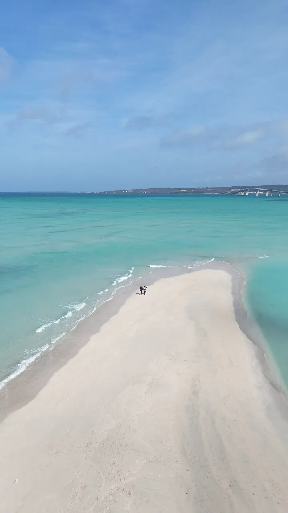

Journey V3 Step4 — 動画レンディション検証 (travel-17)
① この端末での自動選択（実際のengine判定）
② 解像度を手動で再生比較（実機で画質確認）
※ 地図フェーズを飛ばし、動画パート(開始3.5s→接続16.0s)から再生。Heroまで通しで確認できます。
③ poster 表示確認（再生前フレーム / 黒画面回避）

上=poster.webp を直接表示。下=preload無しの<video poster>（実機で再生前にこの絵が出るか）:
④ 各解像度のファイルサイズ（この配信元から取得）
⑤ 選択マトリクス（viewport幅 × iOS → 選ばれるtier）
ログ